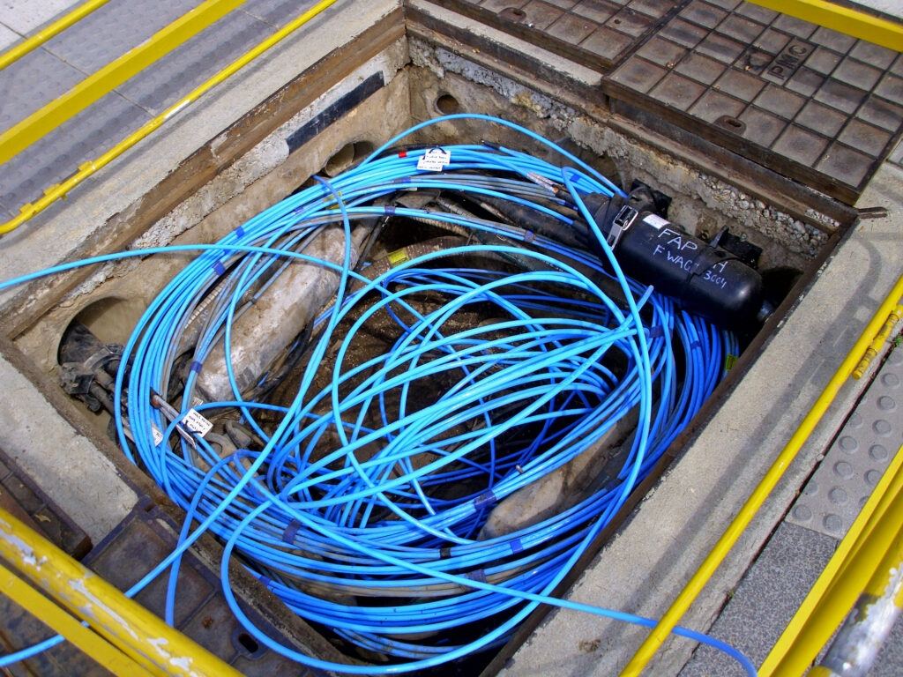
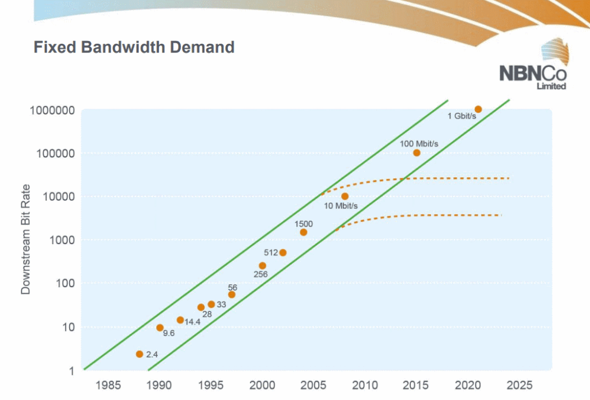

What if we held an Australian broadband crisis and nobody came? That's pretty much what happened in Australian broadband policy over the decade to 2025. Governments, forecasters and the media can all learn lessons from this episode.

Illustration: Fibre optic cable in a Telstra pit | Author: Bidgee on Wikimedia | Used under Creative Commons Attribution-Share Alike 2.5 Australia license
Key points
- Australia’s once-fierce broadband war, pitting a costly fibre network against a cheaper, slower alternative, has quietly concluded. Public and political concern over Australia's internet speeds has largely evaporated.
- The reason? The predicted economic crisis from slower speeds never materialized.
- Dire forecasts failed because "fast enough" broadband proved sufficient for most consumer needs, like video streaming. The revolutionary benefits once promised from ultra-fast speeds were greatly overstated.
- The moral of this story is that governments should be wary of over-engineering infrastructure. Understanding of practical user needs and proved a better guide than grand, speculative technological visions, and incremental upgrades proved a better solution.
Now the article in full:
Here's a puzzle. Twelve years ago the National Broadband Network (NBN) stood at the cutting edge of Australian public policy concerns. The Coalition under Tony Abbott and Malcolm Turnbull was preparing to gut the Kevin Rudd/Stephen Conroy plan for a full fibre-to-the-premises broadband network. That fibre-to-the-premises network promised superfast broadband – that is, broadband above 100 megabits per second (Mbps). The Coalition – well, on this issue, mostly Malcolm Turnbull – planned instead to complete the network using mostly merely plain old fast broadband – that is, broadband with speeds of less than 100 Mbps. The Coalition claimed this more limited broadband network would cost less, get built faster, and sacrifice not that much in capability. Over the years after Abbott's 2013 election, the bulk of us would make do not with superfast broadband but with fast broadband – that is, to repeat, less than 100 megabits per second.
At the time, many people complained loudly and with apparently genuine passion about the Coalition's reluctance to complete the NBN. Indeed, they complained bitterly that the NBN's obvious goodness made any doubts a clear sign of technological and economic ignorance:
- Then NBN CEO Mike Quigley led the way, claiming that fixed line broadband demands (by households, presumably) would reach a full gigabit (1000 megabits) per second by 2020.
- Journalists such as the ABC's Emma Alberici followed Quigley's lead.
- Alberici told readers in 2013 that that healthcare robots and other telehealth advances such as high-definition videoconferencing, together with other demands such as education and computer gaming, were forecast to create just such demand.
- Alberici also archly doubted Malcolm Turnbull's claim that Australians were unlikely to need gigabit speeds anytime soon, concluding one article: "That's what they said about the World Wide Web".
- That same year, a young and passionate ABC journalist named Nick Ross wrote a 10,000-word article for the ABC attacking Abbott's plan to rework and downgrade the original NBN; Ross claimed, for instance, that a fully fibre network's telehealth opportunities were "so dramatic that the savings to the vast $120bn (and rising) annual health budget will pay for the entire rollout on their own, while simultaneously revolutionising healthcare for all Australians". His superiors rightly intuited that Ross was getting carried away with claims for which he lacked solid evidence, yet their attempts at counselling him provoked further uproar.
- Media commentators made invidious comparisons between broadband speeds in Australia and in countries like Romania.
- Even esteemed Club Troppo commenters started repeating such claims.
- When in 2014 an inquiry (chaired by former Victorian Treasury head Mike Vertigan) argued that the Coalition's truncated NBN would not create a disaster, that decision was pilloried by various commentators, including academics at places like Sydney University.
And where are we now on this controversy, a decade or so on? Weirdly, pretty much none of the impassioned complainers seem to care about it any more. Our average fixed-line broadband speed ranks us just 75th out of 155 countries on the Speedtest Global Index – and hardly anyone cares. Most of us still have less than 100 megabits per second of fixed-line connectivity; the national fixed-line average is around 78mbps.
Yet the last "Australia's internet speeds lag" stories seem to have appeared in 2017. Pretty much nobody says that video downloading is a big problem in Australia. Pretty much nobody claims the shape of the NBN crippled Australia's economic development or its tech sector or anything else. Pretty much nobody cares that our three-year-old Albanese Labor government has played it pretty quiet about the state of the NBN, rather than declaring it must spend up on fixing the Coalition's mess. Pretty much no-one in the media writes impassioned "Fix The NBN!" screeds. Pretty much no economist or business thinker worries that Australia's broadband speeds are holding it back. Contra predictions like Ross's, pretty much no public health expert argues loudly that more fibre-to-the-home connections would transform our health outcomes.
Instead, many of the media chroniclers of impending doom have moved on to other fields. Network traffic continues to be dominated by video entertainment, as it has been since the 1990s. High-definition video remains the Internet's greatest bandwidth hog, but network-related complaints of choppy video are rare. Even amongst broadband network measurement firms like Ookla and infrastructure providers like Akamai, attention has moved to mobile speeds and cybersecurity threats.
Why has this epidemic of Not Caring taken hold? How did the Coalition's watered-down NBN get most of us what we needed?
Mostly because merely fast broadband turned out to be enough broadband for most users. Almost none of the cited benefits of superfast broadband has come to pass.
But that leads us to a broader puzzle: why did all these predictions about our near-future technology infrastructure fail so badly?
Six lessons about technology's benefits
The failed NBN predictions can teach us at least six useful lessons about how we make technology work for our society:
- The first lesson is that projecting from technology improvement to productivity improvement is tough, because it takes more than a single technological improvement to change society. Productivity growth in most western countries in the age of superfast broadband has not exploded; in fact, it has slowed to a walk – and pretty much no-one thinks under-100-Mbps connectivity is the culprit.
- Second, technology can shrink bandwidth needs as well as expand them. Even 4K video can now be compressed into 25 megabits per second or less.
- Third, the micro-level specific benefits claimed for superfast broadband in areas such as education, health and power management were often wildly overstated. For instance, COVID showed that telehealth, contrary to the pronouncements of some would-be visionaries, is mostly determined by the will and mindset of the health providers and the technology comfort level of doctors and patients. And far from needing superfast broadband, telehealth can often be done with just a voice connection.
- Fourth, many of the supposed benefits of superfast broadband were in fact realised with the broadband we already had in 2012. Personal communication continues to be dominated by low-bandwidth phone calls and SMS and social media. For many people, the most obvious result of a return to 2011 connectivity levels would be that their TVs might struggle with 4K streaming.
- Fifth, superfast broadband has not, so far, been the solution to any of our our toughest problems, those intractable ones with complex social roots. For example, health IT experts still battle away trying to get the industry to digitise its existing workflows. I have a My Health Record, but several years of encouraging doctors to use it has resulted in ... a few databased documents.
- Sixth – and perhaps most importantly – this episode confirms once again William Gibson's old lesson that we can often discern society's future by looking carefully at its present. “We can’t begin to imagine what people could do with upload speeds on an industrial scale,” a News Ltd journalist quoted Sydney Uni academic Kai Riemer as saying. But this sentiment, common at the time, was also misguided. In 2012, high-speed broadband had already been in place for the better part of a decade in places like Seoul and Tokyo; meanwhile Australia, like most other developed countries, already had its own high-speed broadband between CBDs, many inner-city areas, and the universities. These examples all demonstrated quite practically the shape of the future, and they disproved the common notion that we could not even imagine that future. Already at that time the incremental benefits of extra bandwidth for technologies like videoconferencing could be seen in communications between different parts of Seoul and Tokyo, and between the Australian capital-city offices of major businesses and professional services firms. And those benefits of superfast broadband were ... well, not superbig.
What about costs?
Club Troppo colleague Antonios Sarhanis, a tech company CEO, wisely asks (in the comments below) whether the higher maintenance costs of the Coalition's multi-technology option might have ended up making it as costly as the NBN. It's conceivable that it did. I haven't looked at numbers, but some critics certainly claim so. And changing technologies half-way through a project obviously raises its costs. But it's hard even now to show to a moral certainty that either option ultimately cost less than the other. Any view would depend on at least two unknowables: the ultimate build cost of the original NBN; and the maintenance cost difference between that unbuilt NBN and the lower-speed mixed-technology network that was ultimately built. I recall the Vertigan Report as suggesting the mixed-technology network could be expected to be cheaper, and I think Vertigan's examination is the best starting point. But we'll never know for sure how things would have turned out if the nation had stuck to the original NBN plan.
Partly for this reason, this post has concentrated on claims about the benefits of superfast broadband. The evidence on benefits is much clearer than the evidence on costs: we can look around the world and see whether superfast broadband looks like it has ultimately made much of a difference to outcomes anywhere. And as far as I can see, it hasn't, any more than it had in Japan or South Korea in 2010 or 2013. At the very least, the most commonly-cited benefit back in the day – "gains from telehealth" – doesn't seem to have proved out. (As usual, use the comments to tell me why I'm wrong about this.)
Six meta-lessons about infrastructure governance
The first potential lesson from Australia's now-defunct broadband crisis is the obvious one, which bears repeating: governments should not try to provide, without good reason, an inflated level of infrastructure, at very high cost, just because they vaguely feel that many people might use if they got it.
But we can find other, less obvious lessons too.
A second potential meta-lesson of the NBN saga is this: don't give in to the temptation to always perform straight-line projections of costly technologies. That was an error that superfast broadband enthusiasts gave in to, all the way up to founding NBN CEO Mike Quigley. In 1999 many of us had slow broadband, and in 2012 we mostly had faster broadband, and so many enthusiasts concluded that in 2025 we would need superfast broadband. Below right is a slide that Quigley showed around in 2010. It's apparently the one which fuelled the technological overconfidence of many journalists. It depicts an endless explosion of bandwidth demand:

In 2010, Quigley told at least one of his his audiences that "the trend has been inexorably upwards ... We need to build this infrastructure today for when we need it." He also joked that "if you think (the fibre-to-the-premises NBN is) a waste of money, that we don't need it, you're betting on the orange curve".
That last sentence was kinda right. When the results eventually came in, the orange curve turned out to be closer to the truth than the green pair of lines – at least for the average user.
Quigley's error was that for the average (as opposed to cutting-edge) user, the most important characteristic of the Internet was not blazing speed but ubiquitous, low-latency connections, which had largely already appeared by 2012. Just as the mach-2 Concorde turned out to have more speed than the bulk of the air travel market required, so immediate superfast broadband turned out to be more speed than the bulk of the Internet market required.
Quigley's graph seems to have a lot to answer for.
A third meta-lesson might be to look out for incremental upgrades that can get the job done. 2012's superfast broadband fans wanted the fastest possible transformation of our entire national internet infrastructure; in the process, they overestimated the demand for that infrastructure in many places. They were also reluctant to point out to less technologically informed Australians that Australia's Internet infrastructure is not monolithic, or that the Internet is by its very nature incrementally upgradeable. Indeed, over time we will get to ubiquitous superfast full-fibre broadband; even as I write, NBN Co continues incrementally upgrading networks, as it should.
A fourth meta-lesson, closely related to the third, is that governments should probably think twice before demanding that service be uniform across the nation. Governments need to consider where infrastructure will find its best uses. In 2025 as in 2012, superfast broadband is needed in some places; it is not needed everywhere.
A fifth meta-lesson, which I under-rated when decisions were actually being made, was that governments are made up of people – and people often form their views for largely emotional reasons. I had the opportunity to talk to a couple of senior ALP figures before the NBN was legislated, and they put great weight on three political and (for them) emotional facts:
- Telstra, the company which at that time completely dominated Australian telecommunications, had frustrated all of Labor's frequently sensible telecommunications reform proposals, over a number of years, through unceasing public and private lobbying. This, unsurprisingly, pissed them right off.
- A successful NBN would ultimately undermine the recently-privatised Telstra's enormous political power.
- Telstra was politically unpopular, and particularly so under loud American CEO Sol Trujillo, so that Labor expected a plan that Telstra opposed could still win votes. And indeed, it probably did.
The lesson for good government here is that, while I understand the temptation, governments should not always leap at the first idea they come across that will win them an election and/or discomfit their enemies.
And a sixth meta-lesson is that when it comes to infrastructure, governments really should do a difficult and high-stakes job of work. This job is to find and put in place the systems that will:
- give citizens access to the specific infrastructure they need; and will
- react well to uncertainties and changed circumstances.
This is what Labor needed to do circa 2007, and this is where it failed.
Putting in place the right systems in turn means three things:
- finding those systems;
- ascertaining that they work; and
- turning them into institutions.
To do all that, a government needs to deliberately sacrifice opportunities to win elections or discomfit enemies – which in turn means that parties will generally move to create good institutions for infrastructure only reluctantly. We need to do more to encourage them.
Footnote: If you think this all sounds like a smart-arse being wise after the event ... well, you could be right. But the archives of Club Troppo go back right through its 162 years of publication*, so you can judge for yourself.
* Yes, I made that bit up. But click the link anyway.
Update 2/1/2024: Now with extra lessons! And Mike Quigley's NBN graph of neverending Internet explosiveness!
Comments: As usual, yes, I'm an idiot about a lot of things. I really will be grateful if you can point out in the comments specifically where my idiocy lies, and detail the huge mistake(s) I'm making.
 About the author: David Walker is the principal of Shorewalker DMS, an editorial advisory firm. Shorewalker DMS specialises in helping organisations make their reports clearer , more complete and more persuasive. See our work, check out our podcasts, and hire us: https://shorewalker.net.
About the author: David Walker is the principal of Shorewalker DMS, an editorial advisory firm. Shorewalker DMS specialises in helping organisations make their reports clearer , more complete and more persuasive. See our work, check out our podcasts, and hire us: https://shorewalker.net.
Twitter: @shorewalker1
Bluesky: @shorewalker.bsky.social
👍😊
David just curious, are there figures for how many Australian households don't have any kind of landline to the house these days?
The link below suggests that June 2022 it was around 64%. https://www.acma.gov.au/publications/2022-10/report/how-australians-make-voice-calls-home
Gee that's a lot!
On reflection when NBN was conceived back in 2007-8 the iPhone was brand new;,smart phones were rare. And things like Facebook etc were also just beginning.
Personally I don't know many who use a desktop fixed style computer to access social media they all use their phones ( endlessly).
And along with ' Netflix ' , gaming and online shopping,social media seems to be what the whole internet is for these days.
I am by no means an expert in the area, but I have read credible accounts that claim the hobbled NBN was not cheaper than the original plan. The general argument goes that the mix of technology involved was much harder to maintain and required more staff training and general headaches. I don't know the details and it's hard to ever get a definitive answer on these questions, but there are people who do legitimately claim that the Turnbull option wasn't even cheaper.
Yes, my reaction to David's post was that I strongly agreed with its thrust — above reasonable broadband access — which as David says the major cities already had when NBN came around — the issues that need to be solved were socio-economic/socio-technical — not technical. But it wasn't clear the change saved money. Meanwhile I pay quite a bit more now for a service that is no better than when I had pre NBN Optus Cable. In the hands of two competing parties, we chopped and changed while they tried to take political advantage of one another. We specialise in that down here in Vic where we hand large cheques to infrastructure ventures to stop building when governments change hands. Remind me to tell you the story of how we funded the 2026 Commonwealth Games in Glasgow. True story!
Antonios, terrific observation – so much so that I am adding a section to the post that discusses it. TL;DR: I think you're right about the difficulties of deciding which option was cheaper.
Nick, you've made me think a bit more about the deeper problem of politicised discourse on long-timescale infrastructure builds: when a political party locks itself into claiming an infrastructure decision is madness, it may also lock itself in to reversing the decision when it wins office. This has already been a problem on Melbourne's Eastern Freeway and on the NBN, and might well prove a problem for builds such as Melbourne's Suburban Rail Loop and even future nuclear power stations. I have really no idea how the system might properly address this. The Suburban Rail Loop, for instance, seems a tremendously ill-founded idea, but it is also clearly started – and will be even more started by November 2026, the first date when a coalition government might run Victoria. What if Labor hangs on until 2030? What are the boundaries here? What are the long-term issues with having a state where each government feels completely free to reverse the previous government's decisions? On your service point, I'm in one sense in the same position as you: my maximum upload and download speeds are both slightly down from the pre-NBN days, and I pay more. Two things to note: - If I recall correctly, the idea of a higher cross-subsidy seems to have been embedded in the notion of a National Broadband Network: Port Melbourne and Port Hedland were both supposed to pay the same price, and the NBN was supposed to be profitable. That's a recipe for higher prices in the inner cities. - My slower speeds are not actually obvious to me in practice; they are swamped by other issues outside the network provider's control, from server response times to the speed of my iPad. One moral here seems to be, yet again, that the ultimate speed of an IP-based network matters less beyond a certain point. (You may or may not be in the same position as me on this.)
I agree with everything, more or less, apart from the suggestion in meta-lesson 5 "that governments really should do the difficult and high-stakes work of finding and put in place the systems that will give citizens access to the specific infrastructure they need". This might be the case in some situations, like highways, where there is a natural monopoly, but the Internet never was a natural monopoly. The suppliers of Internet services were solving the problems, and this was stopped dead in its tracks (with some exceptions like Starlink that are not dependant on the Australian market, some of the wireless internet services etc). We have poured more than $50 billion of taxpayers' money into a dubious investment with no hope of a reasonable return when the private sector would have provided the same service for a profit, and at no cost to the tax payer. There is a high price to the arrogance of central planning.
Thanks Graham. This is a useful sign that I may not be making my meaning clear. Earlier today I added some new content including this passage: " The Internet is by its very nature incrementally upgradeable". I may need to amend the article further. I fully agree with you that Internet service provision has never been a natural monopoly (though it may have some partial monopoly aspects). Just as an example, back around 2006 Josh Gans proposed (in a CEDA paper I commissioned) that Australia should strive for competition at the local level – smaller than a city, but larger than a street..
Agree that some kind of cross subsidy was inherent to the idea of NBN.
At the time felt it would have been better to explicitly fund the regional remote component and leave the cities to the market to sort out.
BTW as I remember it , the argument was that fibre to all the premises was in practice going to take far too long to complete , no?
From the perspective of a regional town our fibre to the curb service is definitely faster ( but not massively)than it was on ADSL, and mostly works quite well, the cost has increased but probably not more than inflation. ( I don't know what our thirty years olds think of it ).
I also spend a bit of time in remote places in homesteads that are satellite only, starlink works really well.
The worst that can be said about SRL is that it is perhaps not the very first priority for Melbourne's public transport system and will cost a substantial amount of money to build (though nowhere near the $200bn figure often cited). You might even say that Melbourne's low-quality transport system desperately needs major, rapid improvement and SRL will contribute to that slower and less effectively than alternatives. That's reasonable, though I don't agree. But the idea that the project is "tremendously ill-founded" is just car brain. The appallingly stupid expansions of Melbourne's destructive and pointless freeway network will cost far, far more money than SRL, even in the short-term. The terrible North East Link project - just one single pointless freeway project - will cost about the same SRL will for the next ten years, and will provide exclusively dis-benefits. If we want bus upgrades or a airport train just cancel North East Link, that'd fund both with billions left over. The ludicrous unthinking campaign against SRL makes Victoria look remarkably silly.
Regarding telehealth etc a big limitation on its potential for rural areas is in the bush most nurses doctors (and patients) are not ' IT technicians' .
Graham I live in a country town that in a free market, would not have gotten high speed let alone super fast broadband, and I agree with the spirit of your comments
Antonio's
News today is that
Anthony Albanese will inject $3bn into Australia’s government-owned National Broadband Network to upgrade homes on the “outdated” copper network and ensure all Australians have access to “fast, reliable and affordable broadband”
Gather that the remaining copper wire is degrading.
BTW
Our place has about four feet of the old wire connection to the fibre outside our front fence replacing that bit of wire would probably be a bit tricky to do quickly or cheaply.
I'd guess it's probably more about places that have perhaps say a hundred feet of old wire between them and the fibre , yes ?
Afr has a fairly detailed report about the governments new NBN announcement.
average cost per premise is given as about $6000 , due to them mostly rural regional premises. People won't be charged for the fibre connection but in order to qualify they must sign on for a higher speed more expensive plan.
The government is seeking to pass legislation to prohibit any future privatization of NBN;
I thought the original idea was that the NBN could be eventually sold at a profit and that's why it's off the books??
Judith Sloan in the Oz
It’s worth noting here that the NBN has neither delivered fast internet speeds nor affordable bills. According to Energy Matters, “Australia ranked 60th worldwide for average download speeds in October 2023, with an average speed of 57.9 Mbps (megabits per second)”.
“This is significantly slower than the global average of 97.5 Mbps, and behind many other developed countries, such as Singapore (220 Mbps), South Korea (178.7 Mbps), and New Zealand (119.7 Mbps). Australia also has some of the highest internet prices in the developed world.”
Some might wonder if high prices, crap implementation and mediocre delivery is in' treasure island ' a design feature ?
I didn't give this too much attention; I read it as the government aiming to make an announceable out of the normal build-out. As the post noted, "NBN Co continues incrementally upgrading networks".
Think your right it sounds like an 'election' thing. One apparent contradiction in the announcement is that the copper wire is "degrading " - presumably will eventually all fail- yet the upgrade is only for people who opt for a more expensive plan. From my experience Starlink is good and i suspect probably competitive with a more expensive NBN plan.
PS can the NBN remain forever a government owned entity and also still be off the government Debt book?
I'm amused to see Judith resurrecting some of the same criticisms that more-broadband-now! advocates deployed against Abbott and Turnbull in the 2010s. The issue remains: what are we losing by delivering households a mere 58 Mbps rather than Singapore's 220 Mbps, and at what saving?
Good question.
For myself the only people I personally know who have gone for very high speeds are gaming tragics.
And gamers mostly need not ultrafast speeds but very high stability and very low latency and jitter. It's a rare gaming scenario that would require even 10 Mbps.
From what I've seen their big spend is on special ' bespoke ' computers and huge screens . One of them for work manages a large firms nationwide HR stuff, from a home in a semi bush suburb area, haven't heard him talk about any problems with web speeds etc.
I don't think the reality is that FTTN is good. I think it's more that apathy had set in. Labor lost the election where they were pushing for FTTP and after another Coalition win the next election people knew they had the accept FTTN. I also think saying Albanese has "played it quiet" about the NBN isn't true. He went to the 2022 election with a promise to fund FTTP upgrade to more homes and repair the existing network. And then his government did fund it. There's not really much to talk about after that until the next election, which he's done. Regarding cost: FTTP is cheaper than other technologies once its installed. This is because of two factors: maintenance and longevity. FTTP uses a passive optical network which means there no electrical equipment for the last part of the network. This greatly reduces the need for maintenance as there's less room for faults. Fiber also lasts a lot longer than copper which means you're spending less on replacing the cable in the group (this factor is compounded by the FTTN network using the existing copper network that was already on its last legs). I'd say the biggest indictment against FTTN is the fact that it was Scott Morrison's government that started to replace it with FTTP. The Coalition paid for the FTTN rollout, promised it to be "faster and cheaper" and after 7 years of budget and time blowouts they started to replace it with FTTP.
NBN finance, for all. Brilliant, or... keen to hear responses. If sortition invoked, and options from a) raise debt to b) you / we own debt free, how do you think the informed citizen jury would vote? What stops this after my assumed "yes please"? Kevin Cox, in 5 minutes, sans jargon, would be asked to be treasurer imo.
Considering long and current capital zietgiest and politics, I'd assume a revolt, from power brokers. Not the body politic.
"Kevin Cox says:
...
"Let us change the mechanics of how the money system works and see what happens.
"One of the things we can easily change about the money system is the way we increase the money supply.
"For trading purposes we only need enough money to handle the amount of trade we conduct at any particular time. In a society where there was very little exchange of goods then we would need very little unless everyone decided to trade at the same time. For ownership purposes we need more money because we allocate the ownership of the goods and services and we often want to rent out our goods and services through the creation of loans. But, there is a limit on the amount we need for rental purposes. This limit is the total value of all goods and services that can be rented out both now and for some period in the future. If we create too much money or if we do not have enough then the system will adjust itself with inflation or recessions.
"The way we currently increase the money supply is through the issuing of loans with money that does not yet exist. Most loans are issued with money that exists and is on deposit but some loans are issued without there being money on deposit. The way the system works we have no idea whether the money we used for a given loan was new money or whether it already existed.
"If we changed the system so that before a loan could be given the money already existed and was on deposit then we are likely to solve most of the problems with the current money system. The problem now becomes one of deciding how much new money to create and who gets ownership of it and how to move to a new system.
"At the moment new money is created through loans and the ownership of the money is given to those who already have assets.
"However, we can create money by printing it, not giving any interest on the new money until it is spent, and requiring the money to be spent on producing a new productive asset. We have an opportunity of experimenting with this approach with the formation of the New Broadband Network company.
"The government could finance this by notionally printing the money and giving it to the company. The money does not earn interest until it is spent by the company. The money is allocated by giving everyone in Australia shares in the company. If this was done there is no debt created. New money is produced and we know it will be spent creating a productive asset. It will not cause inflation because the shares in the company will initially be valued at less than the nominal value of the shares.
"If it works for the NBN then it will work for other infrastructure projects. The existing system can remain exactly as it is including the fractional reserve system. The only difference will be that the Reserve Bank will reduce the amount of money it creates to lend to the banks. If it works as expected then the Reserve Bank can get out of the business of creating new money through lending to the banks and get into the business of increasing the money supply through the creation of productive community infrastructure.
"We can move to this system incrementally, observe what happens and see if the change stabilises the money supply."
https://johnquiggin.com/2009/05/03/austrian-business-cycle-theory/comment-page-1/#comment-80862
Its from the Oz but expect the numbers are correct
From yesterdays AFR
https://www.afr.com/technology/highest-costs-lowest-speeds-make-nbn-a-financial-albatross-for-australia-20250313-p5lj90